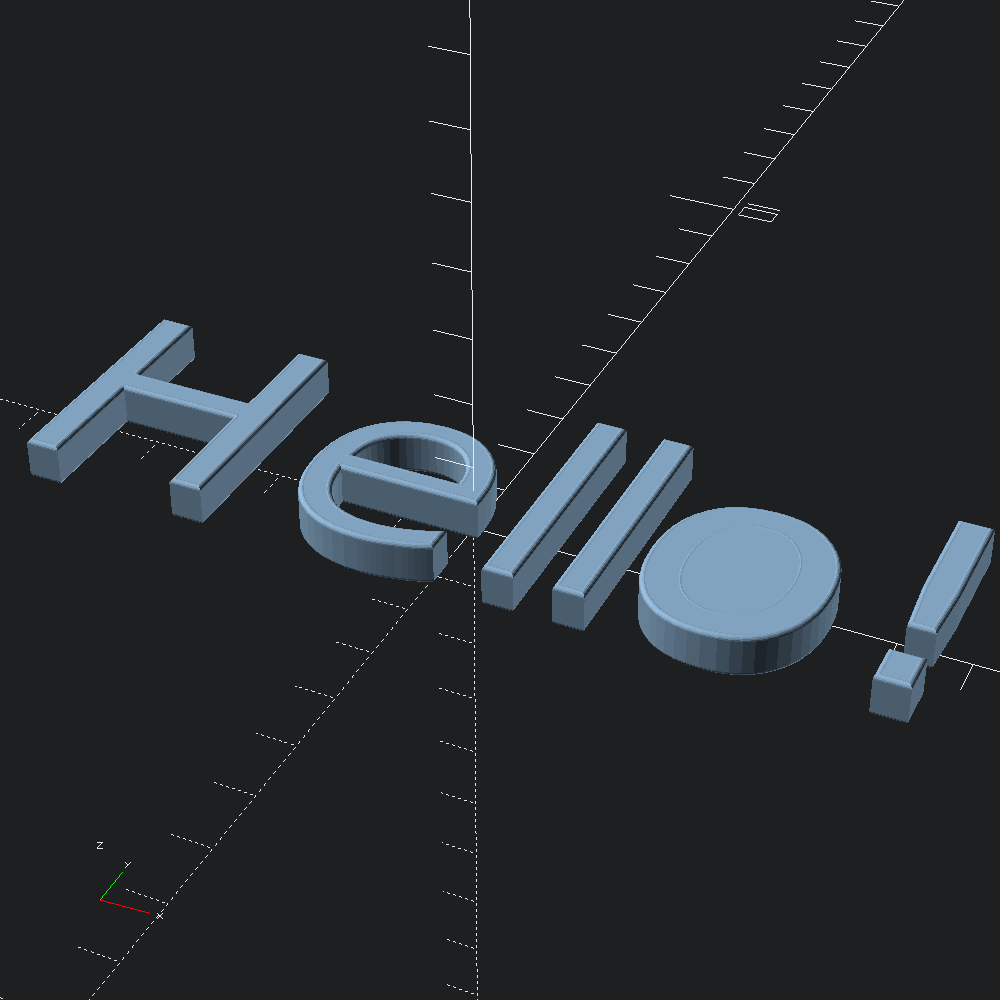

open OCADml
open OSCADmlGenerate a list of Poly2.t spelling out Hello World!. At the moment, PolyText.text is not as flexible and feature rich as Scad.text (OpenSCADs text shape function), but this gives up point representations that be can work with directly.
let hello = PolyText.text ~center:true ~fn:5 ~size:5. ~font:"Ubuntu" "Hello!"Circular roundovers with fn steps, specified by a distance to be `Cut off of the corners. You can expect some finickiness with applying roundovers to the polygons produced by PolyText.text, as the paths coming from Cairo may have some points quite close together, and sharp corners, leading to illegal paths when further roundover operations are applied.
let caps =
let spec = Mesh.Cap.(round ~mode:Delta @@ circ ~fn:5 (`Cut 0.025)) in
Mesh.Cap.capped ~top:spec ~bot:specMap over the character polys in hello with a rounded extrusion funcion specified by caps, and convert into Scad.ts that we can union to create our final model.
let extruder poly = Scad.of_mesh @@ Mesh.extrude ~caps ~height:0.5 poly
let () = List.map extruder hello |> Scad.union |> Scad.to_file "rounded_text.scad"